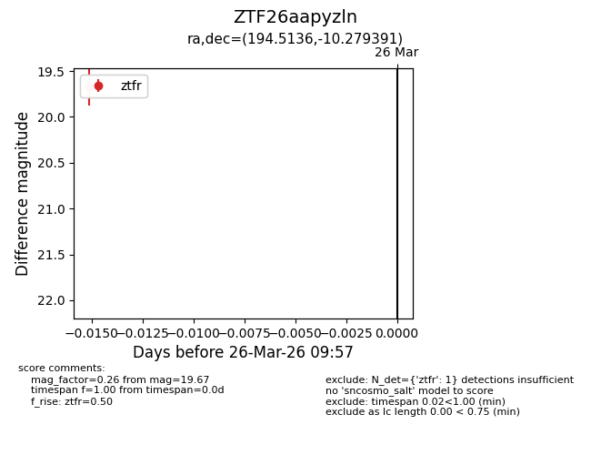
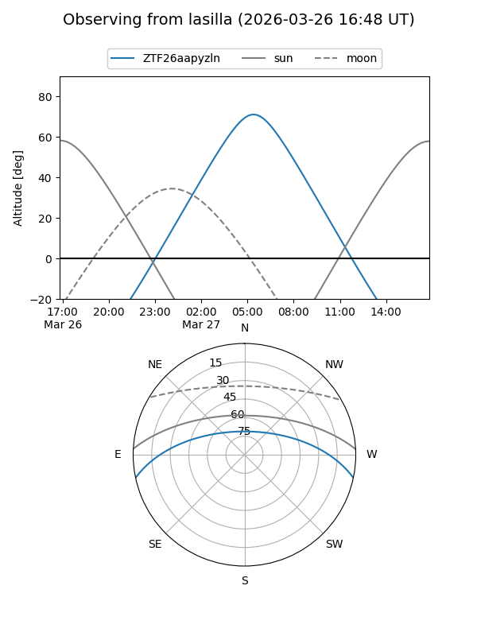
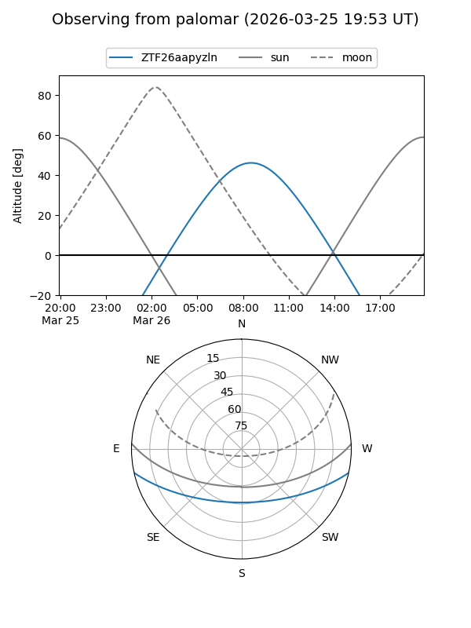

ZTF26aapyzln
Target ZTF26aapyzln at 2026-03-26 09:59
Aliases and brokers:
FINK: link
Lasair: link
ALeRCE: link
alt names
ZTF26aapyzln (ztf,fink_ztf)
Coordinates:
equatorial (ra, dec) = 194.5136,-10.27939
equatorial (HMS+DMS) = 12:58:03.26,-10:16:45.81
galactic (l, b) = (305.6096,+52.55795)
Flags:
Photometry:
last ztfr=19.67
1 ztfr detections
Lightcurve

Visibility


Additional plots